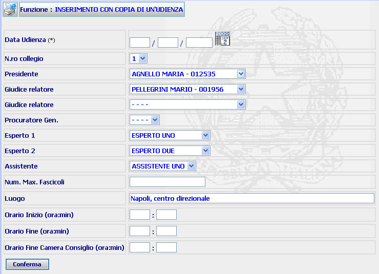
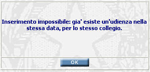
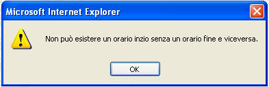
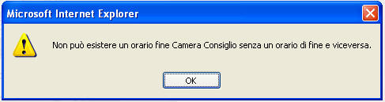

Selezionare la data di
udienza digitandola oppure attraverso il calendario che si apre cliccando
sull'apposito pulsante

GENERALITA'
INSERIMENTO UDIENZA CON COPIA: La funzione, consente di inserire una nuova udienza partendo dalla maschera di dettaglio udienza relativa ad altra udienza ed ereditando i dati, diversi dalla data, presenti nella stessa.
LE MASCHERE VIDEO
La funzione in esame viene realizzata attraverso l'utilizzo della seguente maschera:

COME FARE PER ...
Per inserire una nuova udienza l'utente deve:
|
Selezionare la data di
udienza digitandola oppure attraverso il calendario che si apre cliccando
sull'apposito pulsante
|
|
Compilare (o modificare quelli già precompilati) i campi presenti (tutti facoltativi) |
|
Confermare i dati
inseriti/modificati nella maschera agendo sul bottone
|
CAMPI
I campi presenti nella precedente maschera sono i seguenti:
| NOME | DESCRIZIONE |
| Data udienza |
Compilare il campo (obbligatorio) digitando i dati numerici oppure
cliccando sul pulsante
|
| N.ro collegio | Compilare il campo (o modificarne il contenuto), utilizzando l'apposita tendina. N.B. L'utilizzo di diversi collegi consente di inserire più udienze (con componenti diversi o diverso luogo di svolgimento) nella stessa data |
| Presidente | Compilare il campo (o modificarne il contenuto), utilizzando l'apposita tendina contenente l'elenco Magistrati, per inserire il nominativo del Magistrato che svolge funzioni di Presidente |
| Giudice relatore | Compilare il campo (o modificarne il contenuto), utilizzando l'apposita tendina contenente l'elenco Magistrati, per inserire il nominativo dell'altro Magistrato togato che compone il Collegio. |
| Procuratore Gen. | Compilare il campo (o modificarne il contenuto), utilizzando l'apposita tendina, per inserire il il nominativo del Magistrato della Procura Generale che svolge funzioni di P.M. |
| Esperto 1 | Compilare il campo (o modificarne il contenuto), utilizzando l'apposita tendina contenente l'elenco Esperti, per inserire il nominativo di uno dei due Esperti che compongono il Collegio. |
| Esperto 2 | Compilare il campo (o modificarne il contenuto), utilizzando l'apposita tendina contenente l'elenco Esperti, per inserire il nominativo dell'altro Esperto che compone il Collegio. |
| Assistente | Compilare il campo (o modificarne il contenuto), utilizzando l'apposita tendina contenente l'elenco Assistenti, per inserire il nominativo del Cancelliere di udienza. |
| Num. max. fascicoli | Campo nel quale può essere inserito il numero massimo di fascicoli da fissare all'udienza. In realtà allo stato non risulta attivo il controllo che il sistema dovrebbe effettuare quando viene superato il numero di fascicoli fissati all'udienza. |
| Orario Inizio | Compilare il campo per inserire l'orario (nel formato ora/minuti) di inizio dell'udienza |
| Orario Fine | Compilare il campo per inserire l'orario (nel formato ora/minuti) di termine dell'udienza |
| Orario Fine Camera Consiglio | Compilare il campo per inserire l'orario (nel formato ora/minuti) di termine della camera di consiglio |
PULSANTI
Oltre al
pulsante
 di stampa del contesto (videata)
di stampa del contesto (videata)
|
PULSANTE |
DESCRIZIONE |
|
|
Pulsante che consente di inserire la data di udienza utilizzando il calendario di internet. |
BOTTONI
Oltre ai comandi funzionali relativi al menù verticale sono presenti i seguenti comandi:
|
COMANDI |
DESCRIZIONE |
|
|
A fronte di tale comando il sistema, dopo aver verificato la validità dei dati specificati, termina la funzione con l'inserimento dell'udienza. |
CONTROLLI
A fronte
della pressione del bottone
 , il sistema
effettua i seguenti controlli:
, il sistema
effettua i seguenti controlli:
|
Se si tenta di inserire una udienza con la stessa data e lo stesso numero di collegio di altra precedentemente inserita, il sistema fornisce il seguente messaggio |

|
Se si inserisce un orario di inizio senza un orario di fine o viceversa. il sistema fornisce il seguente messaggio |

|
Se si inserisce un orario di fine camera di consiglio senza un orario di fine o viceversa. il sistema fornisce il seguente messaggio |

Se il sistema non riscontrerà errori verrà visualizzata la maschera del dettaglio udienza